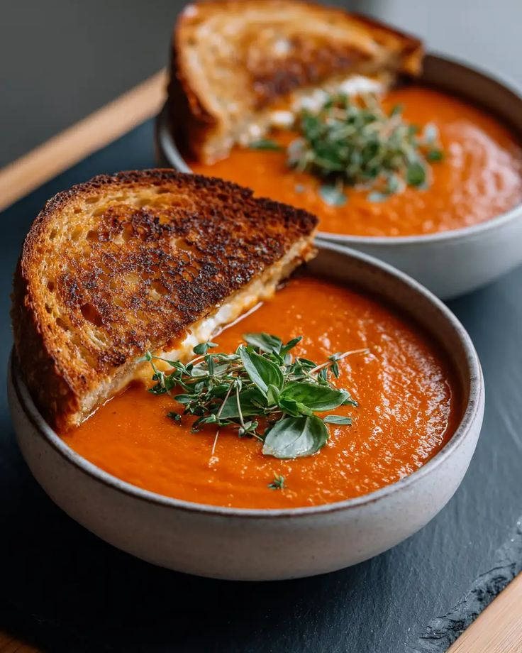

Roasted Tomato Soup

Ingredients
- 6 Large Tomatoes
- 1 Onion
- 2 cups Vegetable Broth
- Fresh Basil
Instructions
- Roast tomatoes and onion at 200°C for 30 mins.
- Blend vegetables until smooth.
- Add broth and simmer in a pot.
- Garnish with basil.
